SmartMvp - Documentation
Version 1.2
Cross Browser, High Quality and Responsive Startup Landing Page Template.
Thank you very much for purchasing our template. This documentation will give you an understanding of how SmartMvp is structured and guide you in performing common functions. If you require further assistance not covered in this documentation, please feel free to contact us on our support center.
We've done our best in making SmartMvp and hopefully you will love it as much as we do. Your opinion is very important for us and we will appreciate if you can rate and review SmartMVP on ThemeForest.
Thanks so much!
Getting Started
Requirements
For installing this template you need to make sure that you have the following extensions on your webserver. You will need to contact your webhost if the following requirements are missing.
- PHP 5.2+;
- PHP Mail support;
- Enabling JavaScript in the web browser.
Installation
Unzip the downloaded files to the local disk on your computer. Inside the extracted folder there will be a folder with documentation and a folder with the html template. Copy all the content related to the layout that interests you inside "SmartMvp-Html-Template" to your server via FTP client.
File Structure
As SmartMvp is an HTML template, it uses a number of .html pages in conjunction with css stylesheets and a number of javascript plugins. The following is a brief overview of the files and a look at some prominent features.
SmartMvp file consists of two different layouts: Main-Layout and EarlyAccess-Variation. For each layout folder you can find all the html files and a folder: assets(the heart of SmartMvp). In this folder the directories and files are well organized as it shown on the image below.
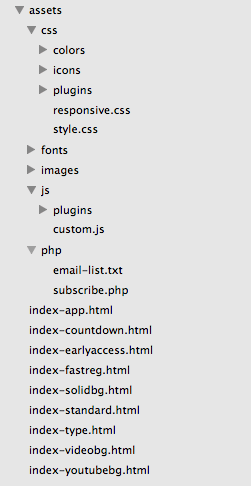Every file (HTML, CSS, JS) that was created by us has clear code, wrapped with comments - all this for your convenience.
- css - CSS styles folder
- colors - Color variation styles
- icons - Webfont Icon styles
- plugins - All the styles of the third part plugins used in the theme.
- style.css - Main Stylesheet for the template that includes all styles relating to the appearance of the elements you see inside each page.
- responsive.css - Responsive fixes for different devices. These styles modify how some of the content in SmartMvp appears on tablet and smartphones, if you need to edit anything specific to these devices, go here.
- images - Images used into the theme
- js - JavaScript files folder. Unless you know what you're doing, don't touch the JS files as any tinkering could result in undesired behaviour back in the browser.
- php - PHP subscription script folder
- index-namevariation.html - Html file for a different header variation layout.
HTML Structure
This theme is built upon Twitter Bootstrap 3.2 framework and is fully responsive. It adapts to window resolution and looks good on all devices including ipad and iphone. See for yourself (resize your browser).
Grid System - Bootstrap includes a responsive, mobile first fluid grid system that appropriately scales up to 12 columns as the device or viewport size increases. The fluid grid system uses percents instead of pixels for column widths. Each row always include 12 columns (for example col-md-8 + col-md-4 = col-md-12). Bootstrap documentation: here
A good example in the theme is the intro-features section who have a first row with a div extended for all 12 columns, and a second row with 3 equal divs (.col-sm-4) which expands in 12 columns for extra small devices(less than 768px)
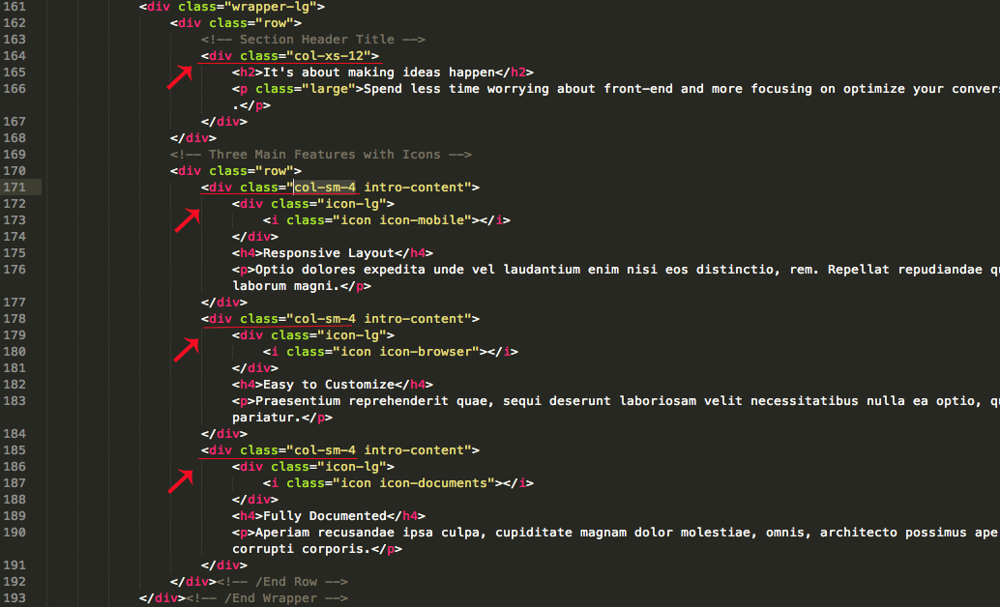Page Structure - The general structure is the same in all the html theme files. Here is the general structure:
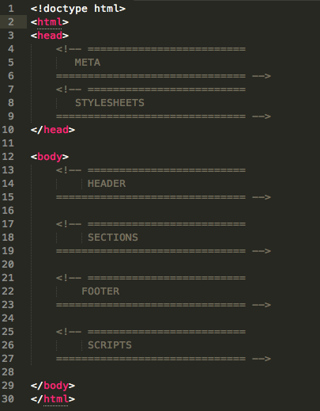CSS file Structure
We are using 6 CSS files across template. We separated styles for improving convenience to edit this template. If you're going to use this template in production we recommend you to merge all stylesheets in one file (for decreasing http queries).
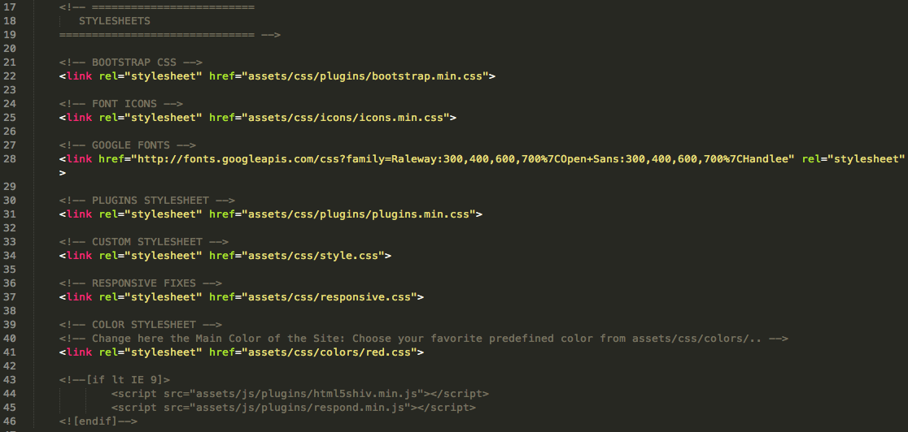Javascript file Structure
All javascripts are placed in folder /js. In plugins.min.js we merge the scripts of all common plugins used in the site. In custom.js file we implement all functions calls.
This theme uses following Javascript files:
- Bootstrap 3.2.0 framework
- jQuery 1.11.0 - A fast javascript library that simplifies how to traverse HTML documents, handle events, perform animations.)
- jQuery Easing - jQuery with the jQuery Easing Plugin is the easiest way to describe animation with easing.
- Modernizr - JavaScript library that detects HTML5 and CSS3 features in the user’s browser. Documentation here.
- Owl Carousel - a popular jQuery plugin which is used for building touch enabled slider. Developed by Owl Graphic
- Venobox - Responsive jQuery lightbox plugin, suitable for images, inline contents, iFrames, Google-Maps, Ajax requests, Vimeo and YouTube videos. Created by Veno Lab.
- Stellar.js - that helps our template act like parallax scroll. The plugin is created by Mark Dalgleish
- jQuery AjaxChimp - is a jQuery plugin which is used to send information to MailChimp list directly using our form in subscription section. Built by Alfa Jango.
- EasyTabs - a lightweight jQuery plugin to provide full tab functionality. on GitHub.
- WOW.js - a jQuery plugin which initiates animation effect on scroll. Created by Matthieu Aussaguel
- TimeCircle.js - TimeCircles is a jQuery plugin that provides a nice looking way to either count down towards a certain time, or to count up from a certain time. TimeCircle on github
- Chart.js - a jQuery plugin for create simple, clean and engaging charts.
- Jquery Superslides - a full screen, hardware accelerated slider for jQuery.
- WayPoints - a jQuery plugin that makes it easy to execute a function whenever you scroll to an element. Github
- Fss - Flate Surface Shader - a fantastic jQuery plugin for rendering lit Triangles to a number of contexts including WebGL, Canvas 2D and SVG. Created by Matthieu Wagerfield
- Tweetie - a Simple Twitter Feed Plugin that works with new Twitter 1.1 API. Github here
- Vide Video Plugin - a Plugin that add a background video to SmartMvp in index-videobg.html. Github
- YTPlayer - An open source jQuery component to easily build Youtube® player or to use Youtube® video as background in index-youtubebg.html. Github here
Fonts
SmartMvp uses Google WebFonts: Open Sans, Raleway and Handlee.
You can choose other fonts from google directory editing this line of code in the <head> section.
If you want to import new font from Google Webfont library, don't forget to change property in CSS style: font-family with correct font name.
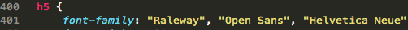Icon Pack
SmartMvp makes use of two stunning icon packs, both provided by Elegant Themes: The Elegant Icon Pack and the Elegant Line Icons. Using these icon packs is a simple matter of knowing the correct class to use.
For example, if you want to add a tablet icon you can write:
-Complete list of class names - pdf
-How to use and embed line icon font on your website
-Complete Elegant Icon Font Set
Color Variations
In SmartMVP there are 8 different predefined color skins.
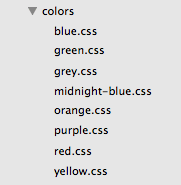You can simply change template's color by replacing default color in the <head> section.
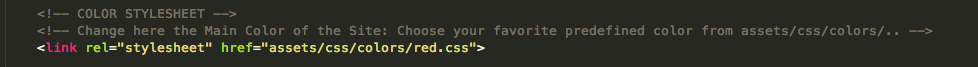For example, if you want to use the 'Purple' colour scheme you should include the following:
Header Section
Logo
SmartMvp makes use of a simple text-logo. If you want to add and image-logo you can simply follow the instructions near the text-logo area in the <header> section.
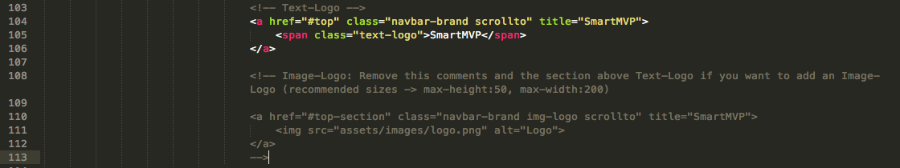max-height: 50px;
max-width: 200px;
Header Background
You can simply change the header's image by replacing hero-placeholder.jpg with the url of the new image. We have the following structure in style.css
Smartmvp uses also a color-overlay on the header's image to make content more visible.
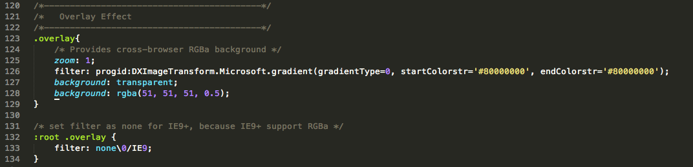At last to enhance images SmartMvp provides a parallax effect with stellar.js: documentation here..
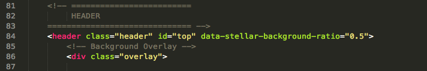Countdown
The countdown timer is controlled by a javascript plugin called TimeCircles. We have set it up in index-countdown.html so that all you need to do is pass a date into the data attribute 'data-date' in the format YYYY/MM/DD hh:mm:ss .
Be sure to leave the countdown div empty as it will be populated by the plugin.
Video Lightbox
SmartMvp makes use of the awesome Venobox javascript plugin and is simple to setup on any element by observing the following conventions:
<a class="venobox" data-type="vimeo" href="http://vimeo.com/idvideo">Open Vimeo video</a>
<a class="venobox" data-type="youtube" href="http://youtu.be/idvideo">Open Youtube video</a>
For image:
<a class="venobox" href="image.jpg"><img src="image-small.jpg" alt="image alt"/></a>
For gallery:
<a class="venobox" data-gall="myGallery" href="image01-big.jpg"><img src="image01-small.jpg" /></a>
<a class="venobox" data-gall="myGallery" href="image02-big.jpg"><img src="image02-small.jpg" /></a>
Play Video Buttons in SmartMvp
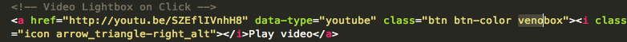Slider
For the slider is used a javascript plugin called Jquery Superslides. We have set it up in index-slider.html. Markup is pretty straightforward, you can easily change texts and background image by following the comments in the code
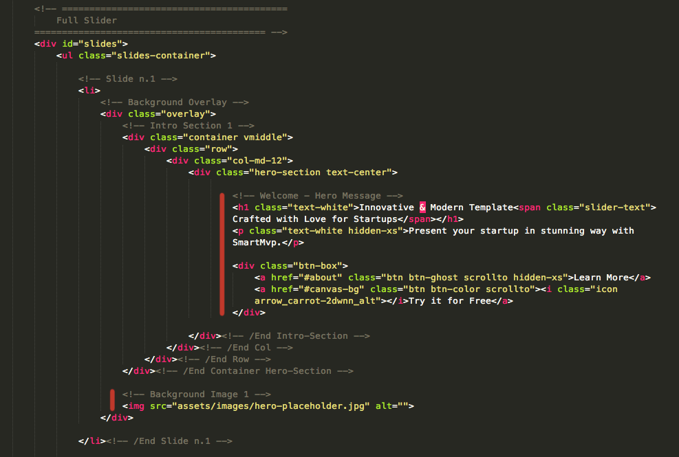In assets/js/plugins/slider/slider.js you can set different options by following the plugin documentation.
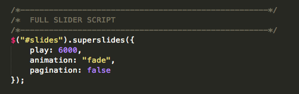Video Background
In index-videobg.html SmartMvp provides the opportunity to add a video in background(which should be composed of a screenshot jpg, a file .mp4, a file .ogv and a file .webm)
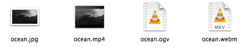Video for Mobile Devices(iOS/Android) is disabled, only fullscreen poster will be used.
You can change path and poster type extension in assets/js/custom.js according to the plugin's documentation here.
Youtube Video Background
In index-youtubebg.html you can use any video from youtube as background. Simply change the videoURL in data-property
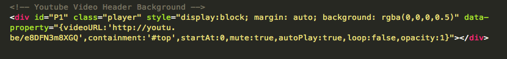Customization
Preloader
Before the main contents of the website are loaded, there is an opportunity to show the preloader of the site. If you don’t need the preloader, you can delete div with class: preloader.
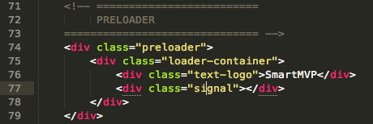Buttons
Default button has .btn class.
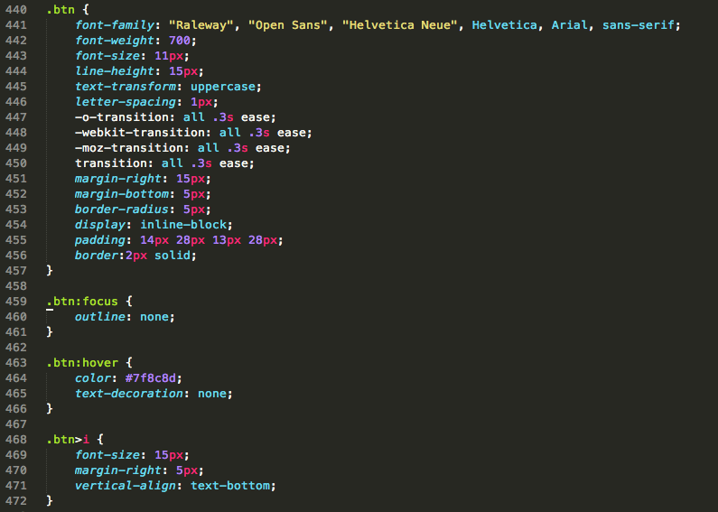By Using other classes with .btn, you can change button's size and color.
<a href="#" class="btn btn-white">This is a white button: white background with red text</a>
Section Backgrounds
SmartMvp provides 3 color-background more than the default white body background:
dark-bg: #323a45
color-bg: based on color-skins
Example:
<section class="light-bg">
Animations
We used WOW plugin to trigger animations on scroll. It used Animate.css for CSS animation. You will find all of the animations in Animate.css website. To learn more about WOW please read their Documentation.
Example:
<div class="col-sm-4 wow fadeIn">Content here <div>
Tabs
You can click tabs to swap between content that is divided into logical sections. SmartMVP uses EasyTabs plugin for Testimonials and Features. At the minimum, you need a container, a collection of links for your tabs (an unordered list by default), and matching divs for your tabbed content. Make sure the tab href attributes match the id of the target panel (panels must be referenced by id, not class). This is the standard semantic markup used for Testimonials Section.
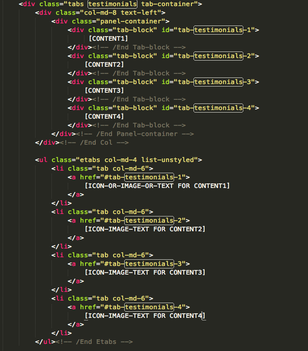Charts & Fss
Chart.js and Fss.js are Javascript plugins that use the canvas element to render charts and lit triangles that are highly customizable and very easy to implement.
Chart.js - SmartMvp provides 2 Doughnut Charts and a Line Chart.
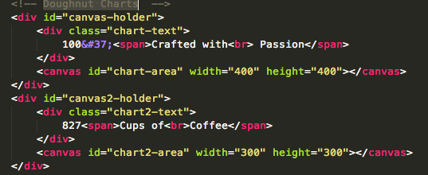 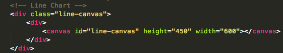You can customize values, colors ,highlights and labels of each charts by editing this code in custom.js file.
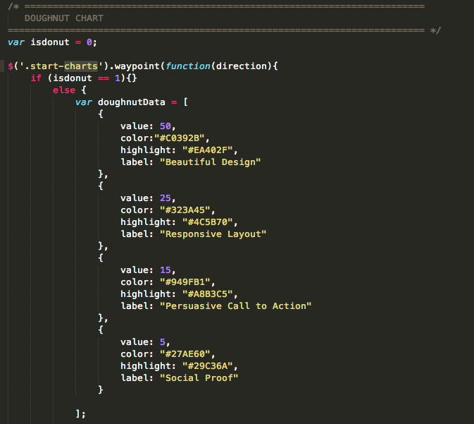The value attribute should be a number, Chart.js will total all of the numbers and calculate the relative proportion of each.
You can also customize the label, data and colors of the line chart:
Before Doughnut Chart or Line Chart Canvas is important to add a div with the classes described above for start animations.
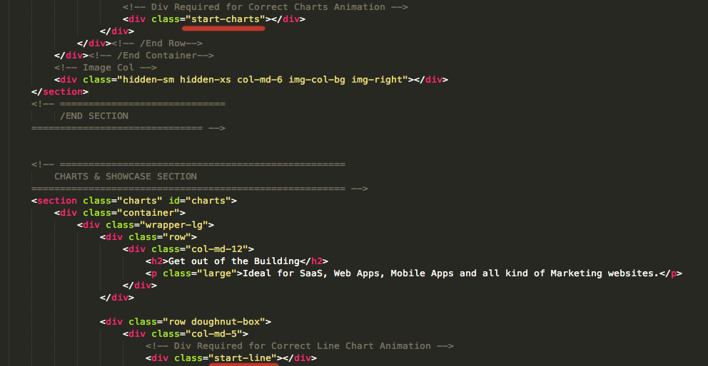FSS.js - In custom.js you can change FSS.Light colors,FSS.Plane and FSS.material colors. To simplify your life you can modify directly the online demo and replace the values into custom.js only after read flat surface shader documentation on github
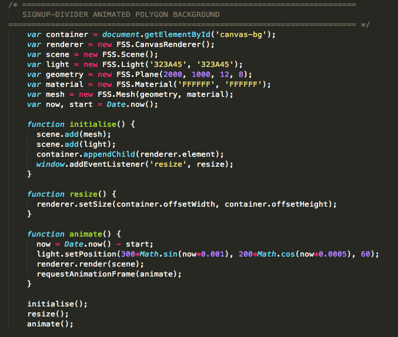Pricing
You can show your price plan by using 3 price tables. Just edit price, features and plan's name.
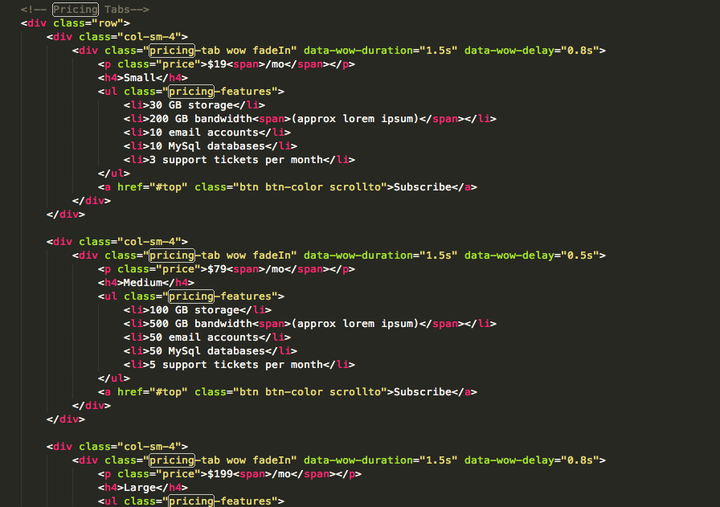Screenshots Carousel
SmartMvp makes use owl carousel in this section. If you wanna learn more about options and features please read doc: Owl Carousel.
Just change the image links to your desired screenshots url. That's all.
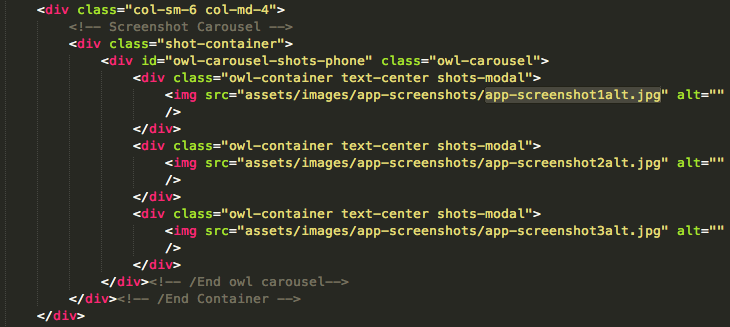Twitter Feed
New Twitter API requires oAuth Token Key, so it's three step process.
Step 1 - First, you need a consumer key and secret keys. Get one from dev.twitter.com/apps
Step 2 - Edit assets/js/plugins/twitter/api/config.php file and replace values with your Consumer and oAuth Keys.
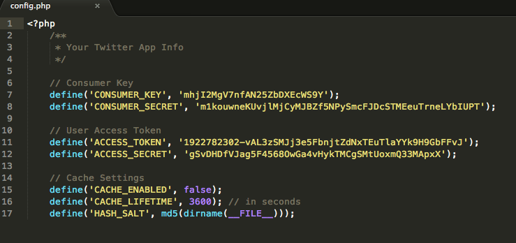Step 3 - Customize your twitter feed following the instructions on Github 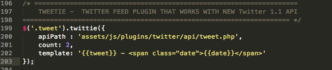
Forms
Subscribe.php
SmartMvp uses different signup/subscription forms.
- Signup Form on Signup Divider Section.
- Signup Form on Fast Registration Header.
- Login Modal Form
- Signup Modal Form
- Subscribe Form on Newsletter Section (Mailchimp by default)
- Subscribe Form on Early Access Header (Mailchimp by default)
- Subscribe Form on Countdown Header (Mailchimp by default)
- Get Early Access Modal Form (Mailchimp by default)
- Contact Form on Footer of Early-Access Variation
Signup and Login Forms after a first validation, make an Ajax Call to subscribe.php
Subscribe.php check Email Address and add it to email-list.txt.
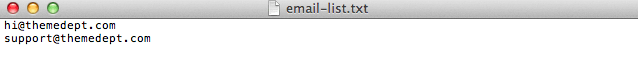Emails will be saved each in their own line like in the image.
This solution can be correct for subscription form when you don't use Mailchimp but for signup/login form you need to implement your own code to connect your database or your backend.
Mailchimp Newsletter
Current active subscribe form will save emails to your mailchimp list. If you don't have a Mailchimp account you alternative could use local subscribe that call subscribe.php above.
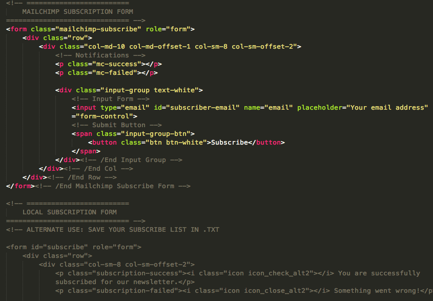In order to connect your Mailchimp List you should first find the corresponding mailchimp post url. How to do this?
- Login to your mailchimp account
- Go to your list
- Select Signup Forms 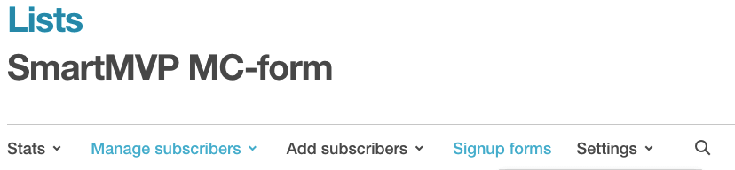
- Select Embedded forms 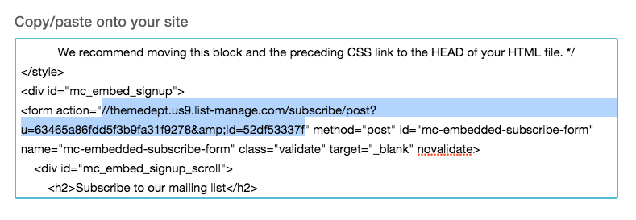
- Copy the link and paste into custom.js mailchimp script. 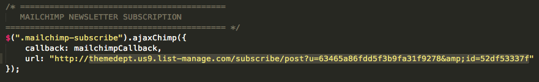
(for main-layout)
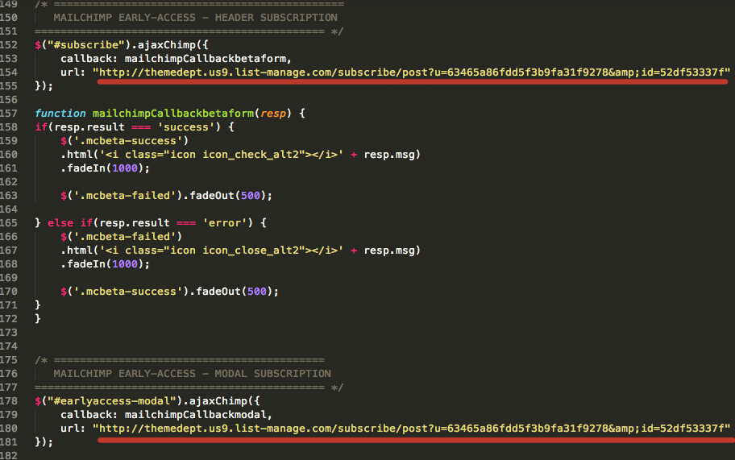(for early-access variation)
Note: Remember to add http: if it is not included with mailchimp list url.
Login/Signup Modal
SmartMvp provides login,signup and "get early access" modals.
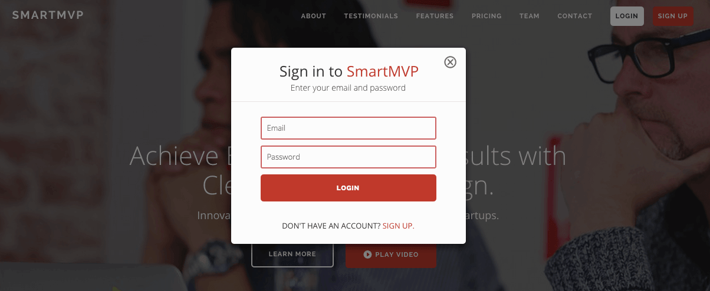 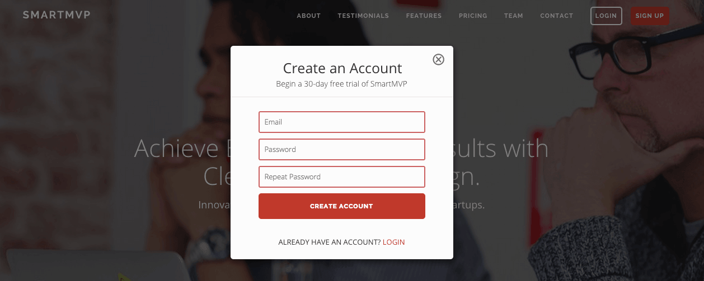 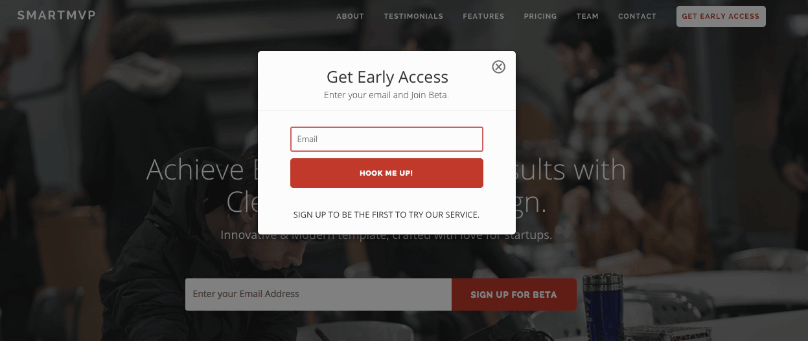You can customize this modals directly on the .html file.
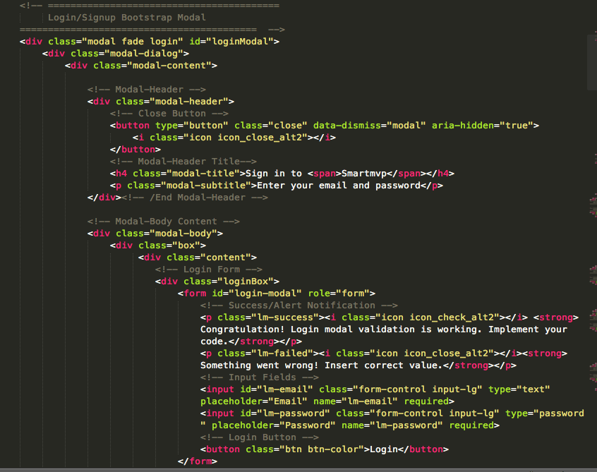Contact Form(for Early Access Variation)
Contact form will use php to send emails. Just open assets/php/sendmail.php file. Don't worry, no need to be familiar with PHP to edit this file. Change the current email smartmvp@themedept.com to your email address. Your form is ready!.
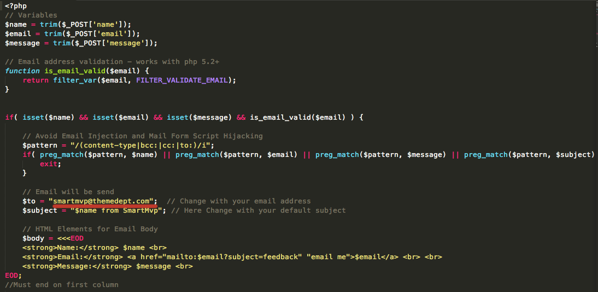Credits
Images used in the demo are from:
- Death to the stock photo
- IM Free
- www.imcreator.com/free/all-aboard
- www.imcreator.com/free/business/clark-kent
- www.imcreator.com/free/business/even-wachten
- www.imcreator.com/free/people/death-disco-july-2010
- www.imcreator.com/free/white-girl
- www.imcreator.com/free/business/home-office1
- www.imcreator.com/free/business/ryan-mccarthy
- www.imcreator.com/free/objects-items/buzz
- www.imcreator.com/free/cityscape/urban/gaviota-en-el-top
Listed below links to image:
Video from:
App Screenshots used in the demo are from:
Support
If you need any help. Feel free to contact us anytime. We are in GMT +1 (Italy) and we aim to answer all questions within 24 hours in weekdays from Monday to Friday.
Support Center: https://themedept.ticksy.com/
Email: support@themedept.com